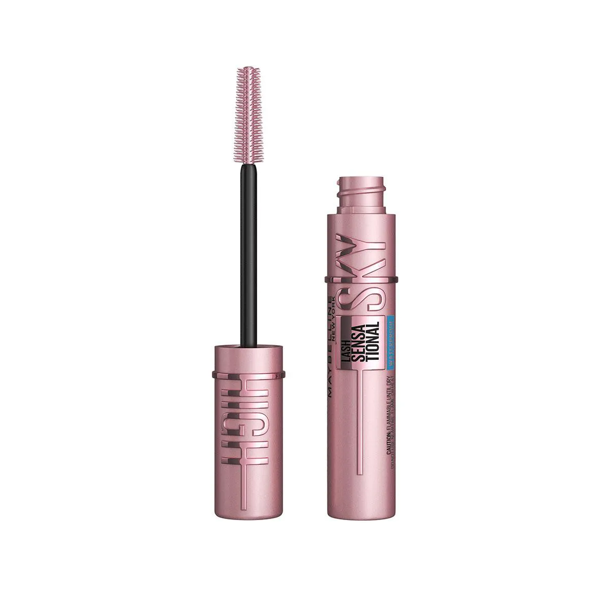
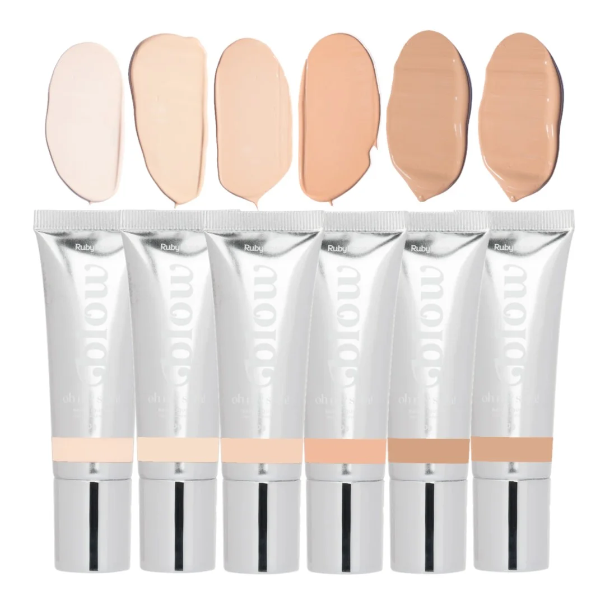
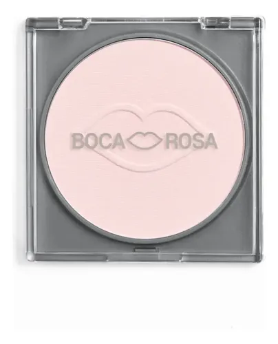

Máscara de cílios- Maybeline
Cores para criar diferentes estilos de maquiagem.
💄 SOUL MAKE
SOUL MAKE
Escolha seus itens de maquiagem em um só lugar!

Cores para criar diferentes estilos de maquiagem.

Para deixar a pele uniforme e preparada.

Diferentes cores para completar sua maquiagem.